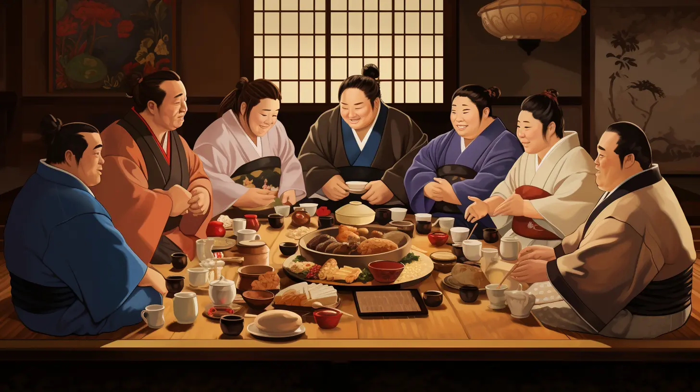

Food with History in Every Bowl

East Asian soups and stews are often more than simple meals. Many are tied to a rich history of community and the need to feed groups of people with nutritious and filling ingredients. Here, we will look at two hearty examples from South Korea and Japan: Korean Army Stew (Budae Jjigae) and Chankonabe
Both dishes are served from one large pot but they come from very different cultural and historical settings. Korean army stew reflects adaptation during and after the years of the Korean War, while Chankonabe became a staple of sumo wrestlers (rikishi) sometime around the late Meiji era.
Featured Dishes
- Korean Army Stew (Budae jjigae): A spicy Korean stew that combines jjigae-style broth with ingredients such as kimchi, sausage, spam, tofu, and ramen noodles.
- Chankonabe: A Japanese hot pot associated with sumo wrestlers and commonly made with broth, meat, tofu, and vegetables.